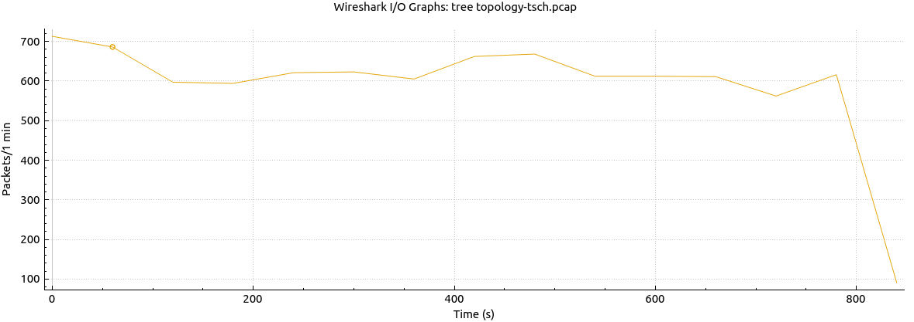
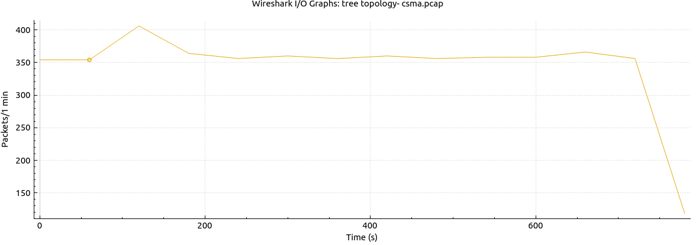

The question
Factories, robots and military sensor networks depend on small battery-powered sensors that report on a schedule. A late or jittery message can stall a production line or blind a commander. We asked one question: which network layout and MAC protocol give the most reliable, lowest-delay communication for time-critical sensors with little power to spare?
The MAC protocol decides when each sensor may transmit. We compared two:
- CSMA/CA (the default): a sensor listens, and if the channel is busy it waits a random time and tries again. Flexible, but the random waits add delay that changes from message to message.
- TSCH (Time Slotted Channel Hopping, IEEE 802.15.4e): every sensor shares one clock and transmits only in its assigned time slot, hopping channels to dodge interference. Built for predictable timing.
How we tested it
- Built the networks. In the Cooja simulator we created star, mesh and tree layouts of Contiki-NG sensor nodes, each with one server and several clients, running the standard IPv6, 6LoWPAN and RPL routing stack.
- Ran each one twice. Every layout ran once with CSMA/CA and once with TSCH (a one-line Makefile change, then a rebuild), for six networks in all. Each client sent a 16-byte UDP message every 200 ms.
- Captured the traffic. Cooja's radio log saved every packet to a PCAP file.
- Measured it. We graphed throughput, jitter (UDP and 802.15.4) and the delay between arriving packets in Wireshark for all six runs.
What we found
- TSCH beat CSMA/CA in every layout. Jitter was lower and steadier with TSCH, because packets wait for a fixed time slot instead of a random back-off after a collision.
- The tree layout won. It had the highest throughput, the lowest jitter and the shortest gaps between packets under both protocols. We expected the star layout to win, and the data said otherwise. Mesh paid for its extra paths with routing overhead.
- Tree plus TSCH was best overall, carrying roughly twice as many packets per minute as the same tree using CSMA/CA.


Limits: each run was about 12 seconds of simulation (roughly 13 minutes of scaled network time). Without end-to-end timestamps we measured the delay between arriving packets instead of true one-way latency, and the clean simulated radio links dropped no packets. Real hardware or another simulator would be the next test.
The literature study
Before the experiment, the team surveyed how Time-Sensitive Networking (TSN) delivers guaranteed timing in industrial automation, robotics and cars, and why it is still hard to do over wireless. It covers the core standards (time sync in IEEE 802.1AS, scheduled traffic in 802.1Qbv, stream reservation in 802.1Qcc), the open problems, and security concerns such as time itself becoming an attack vector, where an attacker who delays or skews clock sync can break a schedule without touching the data. A second briefing summarized a 2024 review of 5G, Wi-Fi 7 and TSN in smart manufacturing (John et al., Future Internet).
Who did what
| Member | Contribution |
|---|---|
| Scott Russell | Team lead: coordination and milestones, report lead, the project platform section and the conclusions, tying the results to Industry 4.0 and TSN. |
| John Beuter | Installed and configured Contiki-NG and Cooja, linked TSN concepts to Contiki's MAC protocols, generated the packet captures and led the topology experiments. |
| Nisha Raj | Built and tested the topologies, led the TSCH runs and baseline metrics, and worked out how to measure loss, delay, jitter and throughput in Wireshark. |